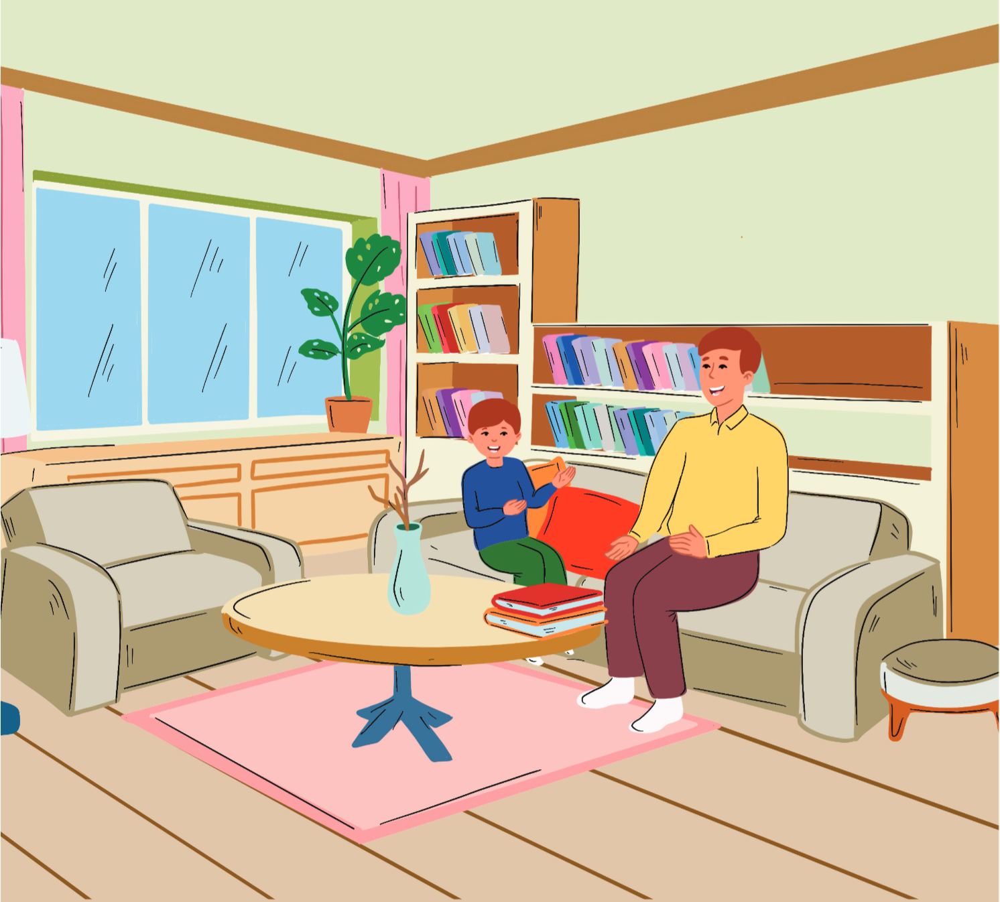

Mendime të ndryshme, vendime të përbashkëta
Vendimmarrja dikur dhe sot
Situata 1.
Në shtëpinë e Bledit kishin nisur një diskutim interesant. Të gjithë pjesëtarët e familjes ishin përfshirë në të.
- Ne duam që të dëgjohet zëri ynë në familje, - thoshte Bledi. - Edhe pse ne jemi fëmijë, duhet të na kërkohet mendimi për vendimet që merren në familje.
- Kanë ndryshuar gjërat, - iu drejtua babai Bledit. - Ne ju kemi marrë mendimin juve. Për shumë gjëra në familje, kemi vendosur së bashku. Kur unë kam qenë fëmijë si ti, - vazhdoi ai të fliste, - babai im nuk na pyeste fare, por vendoste vetë për të gjitha gjërat. Gjyshi yt, si kryefamiljar që ishte, i merrte të gjitha vendimet në familjen tonë, por edhe gjyshi ndryshoi me kalimin e kohës. Sot, ai ndihet shumë i lumtur kur dëgjon nipat dhe mbesat e tij teksa shprehin mendimet e tyre lirshëm.
Bledi u habit nga fjalët e babait. Ai donte të dinte më shumë rreth asaj që i tha babai. Biseda e tyre vazhdoi. Në fund, Bledi kuptoi se shumë gjëra kishin ndryshuar për të mirë nga e kaluara.
